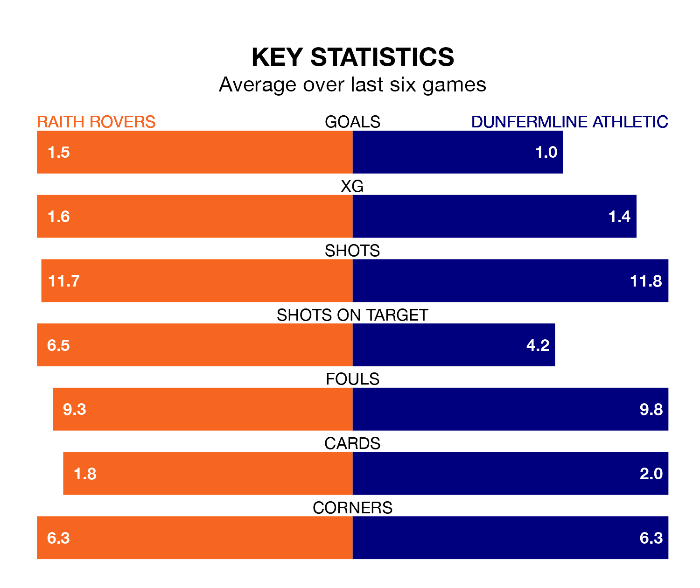

Raith Rovers host Dunfermline Athletic in Saturday's match at Stark's Park looking to bounce back from defeat last time out in the Championship.
Raith, who sit second in the league after 26 games, fell to a 3-2 away defeat to Arbroath on March 1.
They face a Dunfermline side who also lost their last match, a 2-0 defeat to Airdrieonians, and who sit sixth in the table.
With 46 goals in 26 games so far this season, Raith are the league's third-highest scorers with 1.8 goals per game. And they are conceding at an average rate, letting in 36 goals at a rate of 1.4 per game.
Dunfermline, meanwhile, are below average scorers, with 1.1 goals per game, compared to a league average of 1.4. They have conceded 1.3 goals per game.
In the last 10 years, Raith and Dunfermline have played each other on 19 occasions. Raith won seven of them, Dunfermline five, and they drew seven times.
On average, Raith scored 1.2 goals and Dunfermline 0.9 in those matches.
Their last meeting was on January 2, when Raith won 2-1 away.
In Lewis Vaughan, Rovers have one of the league's sharpest shooters so far this season. He has notched 12 goals in 26 appearances, to sit fourth in the scoring charts.
His goal rate of one every 149 minutes is quicker than that of Craig Wighton, Athletic's top scorer with a goal every 219 minutes, and a total of five goals in 19 games.
The hosts are in mixed form in the Championship, with two wins and a draw from their last six games.
With two wins and two draws over that period, the away side's form is slightly better – they have taken eight points from 18, compared to Raith's seven.
Saturday's match will be refereed by Craig Napier, who has taken charge of eight Championship games so far this season, issuing four red cards and booking 31 players. He has awarded three penalties.
The last Raith game Napier refereed was a 4-4 home draw with Ayr United on December 22. His last Dunfermline match was their 1-1 draw at home against Arbroath on February 17.
Updated: 09:34 (UTC), 08/03/24